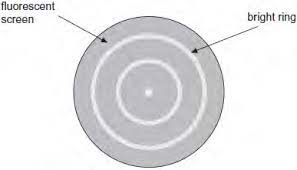

Introduction
The concept of parallel universes has an initial impression of nonsense when put into the face of science however one may be surprised yet intrigued to realise there is a theory in physics which supports this very idea. This idea comes beneath a branch in physics commonly named as Quantum Mechanics. Quantum mechanics is the study of particle behaviour on a miniscule level, experimenting with the eccentricities of electrons or accepting certain uncertainties which we have not come across before.
Famous figures in this field of study include but are not limited to Niels Bohr, known for his studies on atomic energy levels, Albert Einstein for his discoveries of the particle nature of light, now known as photons, Louis De Broglie for his insights into matter waves, commonly known as the De Broglie wavelength and finally, Erwin Schrodinger. The topic I will explore in this article is an evolving one which has slowly gained appreciation within the physics community, following from initial hesitation due to the science fiction connotations of this concept. Physicists have come a long way to arrive at this theory, beginning with Niels Bohr and his energy levels. The significance of this theory is demonstrated by the manner in which it can change our perception on daily life events as well as accelerate the developments and uses of advanced technology.
A brief introduction to quantum mechanics
A key idea I’ll establish early on is the significance of observation in this field. This will be explored later on but we’ll first begin with Niels Bohr. In an atom, there are discrete energy levels. Using the knowledge of electrons within the atom, we can establish that electrons can jump between these energy levels if a photon with exactly the right amount of energy is absorbed. This is essential as photons and electrons have a one-to-one interaction. Following the advancements in the particle nature of light, demonstrated by Albert Einstein using the photoelectric effect, discussions began to arise on whether an electron could display wave-like properties. Key properties of waves include diffraction and interference. Diffraction is the spreading out of waves after passing through a boundary. There are two types of interference: constructive and destructive. Constructive interference occurs when two waves in phase produce a singular wave which has an amplitude resulting from the two waves. In other words, the amplitude of the two waves will be added to produce the resultant amplitude. Destructive interference occurs when two waves out of phase interfere however cancel out. To showcase these properties, an electron diffraction experiment took place. To physicists’ surprise, on a screen, fluorescent rings had been produced. The bright rings represented constructive interference and the grey areas displayed destructive interference which showed that electrons are both particles and waves.
Figure 1: Electron diffraction fluorescent screen
Electrons
Following from the previous section, we know that electrons are
classed as both particles and waves. To further this concept,
we’ll introduce a scientist named Louis De Broglie. De Broglie
plays a part in the wave-particle duality of these electrons,
deriving the idea that the wavelength of these particles is
inversely proportional to its momentum. It was established earlier
that electrons ‘orbit’ the nucleus in discrete energy levels. Why
does this occur?
E = hf
The frequency, f, can be substituted using the equation f = c / λ,
producing the equation E = hc / λ
Energy is inversely proportional to the wavelength. Since
electrons display wave-like properties, they must also consist of
a wavelength. Following on from this, these energy levels consist
of a whole number of wavelengths which allows for the discrete and
exact nature of these energy levels. [3]
As any theory in physics, or science, this must be tested.
Young’s Double Slit
When venturing into the wave nature of light, a famous experiment was done by Thomas Young, named as Young’s Double Slit. This involves a screen, a singular slit and a double slit. Light is shone through the single slit to ensure a coherent source of light and is then passed through the double slit to produce patterns called ‘fringes’ on the screen. These fringes consist of dark and light patterns, the dark showing destructive interference and the light showing constructive interference.
A similar concept was later used for electrons however a peculiarity emerged. The electrons behave as particles when observed, e.g. passing through one slit but when unobserved, show diffraction patterns. In this scenario, the observer per say is the detector. This gave way to the concept of a wave function. [6]
The Copenhagen Interpretation
Following on, a wave function is a mathematical function which is spread out in space and demonstrates the probability of a particle being anywhere within that space. It is denoted by the Greek letter psi. This is known as a superposition of every position this particle may be in. The value of the wave function at any of these points is the amplitude. To find the probability, we square this value in order to maintain a positive probability.
The famous Schrodinger equation can provide the wave function of a quantum mechanical system and therefore predicts the behaviour of a dynamic system.
This equation replaced Newton’s Laws in the quantum world as his equations such as F=ma did not work with the size of the particles in the quantum world. For example, if a particle is put into a box and we want to inquire its position, F=ma would not work. Furthermore, Heisenberg’s Uncertainty principle states that we cannot know a particle’s exact position and exact momentum of quantum objects.

Figure 2: Copenhagen Interpretation
The equation tells us what energy levels the electron is allowed to have. If an electron was inside a box, there is zero probability of it being outside the box, therefore the wave function outside the box is zero. Since the wave function is a wave, it has a frequency and we know E = hf. Therefore, electrons can only occupy certain energy levels. [5]
As experimentally noted, an electron displays varying behaviour dependent on the presence of an observer. When we observe its particle nature, we observe it going through one of the double slits. At the time, this eccentric phenomena was seen due to the collapse of the wave function. As I previously mentioned, a wave function extends through all of space but when observed, this wave function collapses instantly into the measured outcome. [4]
Using a well-known thought experiment, this idea can be demonstrated. This thought experiment was derived by Erwin Schrodinger.
The experiment goes as follows:
There is a cat in an
opaque box which contains radioactive material. Radioactive
materials can decay at any moment as it is a completely random
process. If the material decays, this will kill the cat. Unless we
open this box, we don’t know whether the cat is dead or alive.
This insinuates that the cat is in a state of superposition,
meaning that it is both dead and alive until we open the box.
According to the Copenhagen Interpretation, once we open the box,
the wave function collapses to give us either a dead or alive cat.
In the electron experiment, as soon as the electron was observed,
the wave function collapsed to show us its particle nature.
Although logically this seems feasible, theoretical exploration
did not halt here.
The Many Worlds Interpretation
So far, we have established that upon observation, the wave function collapses to give us the measured outcome. A measurement in the thought experiment would be a process which would entangle the state of the observer and the cat, e.g. opening the box. According to the Copenhagen Interpretation, only a singular possibility becomes aware to us that is either of a dead or alive cat.
What if we were to consider the wave function not collapsing at all? If this were the case, instead of the alternate possibility disappearing, as the observer is now entangled with the cat, there is a superposition between the observer seeing an alive cat and the observer seeing a dead cat. This shows us slowly evolving into a state of superposition, leading to the Many Worlds Interpretation. [4]
This interpretation is known as the purest form of quantum mechanics as it is completely deterministic and directly follows from the Schrodinger Equation. If a system becomes entangled, the different outcomes have no effect on each other, introducing the concept of the many worlds. This was established by a graduate from Princeton in the 1950s named Hugh Everett.
Conclusion
In my judgement, I believe that the Many Worlds Interpretation has a high likelihood of being an accurate description of our universe; however, like any theory, this does have objections. Some may object by questioning how a classical world emerges if everything is quantum and in the near future, I wish to explore this.
References
- [3] J.G. Gribbin, In Search of Schrodinger’s Cat, Great Britain, Bantam Books, 1984
-
[4] New Scientist, Sean Carroll : The Many Worlds Of Quantum
Mechanics, (24 Jun. 2020), Accessed : Aug 2, 2023. [Online
Video]
Available:
https://www.youtube.com/watch?v=p7XIdFbCQyY.
-
Up and Atom, What is the Schrodinger Equation, Exactly, (6 Jul
2018), Accessed : Aug 12, 2023. [Online Video]
Available:
https://www.youtube.com/watch?v=QeUMFo8sODk.
-
“Quantum mechanics - How does the electron understand that it is
being observed in the double slit experiment?,” Physics Stack
Exchange.
Available:
https://physics.stackexchange.com/questions/617005/how-does-the-electron-understand-that-it-being-observed-in-the-double-slit-exper .
-
Link to images:
Available:
https://assignmentpoint.com/wp-content/uploads/2016/07/Copenhagen-Interpretation.jpg.
https://i.pinimg.com/originals/9c/29/04/9c29041058484ff2061653fcaf81fd7f.jpg.
{kind=link}